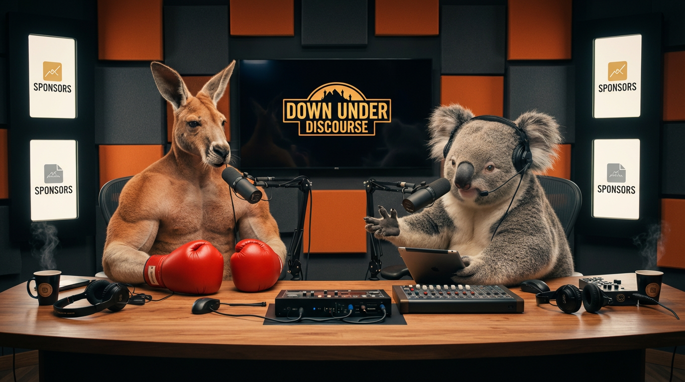
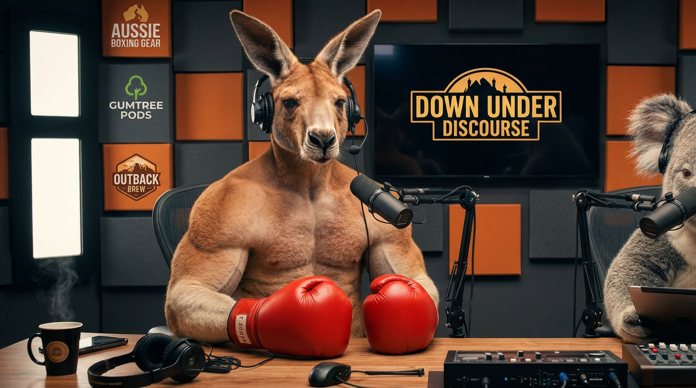
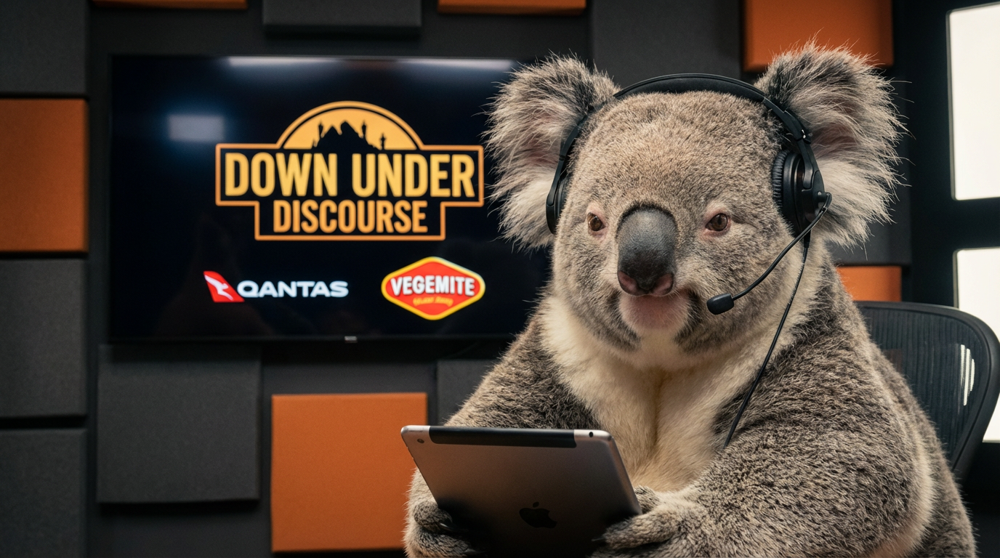

Personagem identificável por imagem e voz em falas diferentes.
Proposta para aprovação
[ Bíblia audiovisual + storyboard ]
Down Under Discourse
Painel de revisão artística do programa. A prova parte dos masters existentes e registra o que ainda depende da decisão do Felipe.
Down Under Discourse
Boomer & Kev

[ 00 / Escopo ]
O que este painel decide
Pré-produção para comparar material concreto. Teste técnico não equivale a aprovação artística.
Figurino, anatomia, set, props e intenção preservados entre planos e formatos.
16:9 e 9:16 partem do mesmo manifesto. Duração e prioridade por rede continuam abertas.
[ 01 / Personagens ]
Base fiel aos masters
A primeira prova preserva a referência visual atual. Ela ainda não está aprovada como figurino original definitivo.

Boomer
Esquerda da bancada- Identidade
- Canguru antropomórfico, musculoso, castanho.
- Atuação
- Energia física e convicção; reações legíveis.
- Gestos
- Luvas apoiadas, avanço de tronco e movimentos de antebraço. A luva age como uma peça inteira.
- Evitar
- Dedos surgindo nas luvas, roupa que aparece e grito permanente.
Conflito aberto
O master mostra Boomer sem camiseta e sem corrente visível. A descrição do engine cita camiseta/corrente. Proposta: preservar o master na primeira prova, sem marcar aprovação.

Kev
Direita da bancada- Identidade
- Coala antropomórfico cinza, orelhas claras volumosas e nariz preto.
- Atuação
- Economia de movimento, olhar e pausa deliberados.
- Gestos
- Piscar lento, inclinação e interação simples com o tablet.
- Evitar
- Expressividade frenética; mudança de rosto, orelhas ou escala.
Continuidade
Headset, tablet, direção do olhar e posição espacial devem permanecer coerentes. As marcas visíveis nas telas não são patrocínios confirmados.
[ 02 / Ocasiões ]
Um set, variações controladas
Trocar figurino ou adereço exige uma decisão por episódio e o mesmo manifesto nas duas proporções.
Referência base, pendente de homologação
Original
Figurino original candidato com o set base. É a referência principal para anatomia, rostos, luvas, headset, bancada e posição dos personagens.
- Preservar Boomer à esquerda e Kev à direita.
- Props mudam de posição apenas por ação mostrada.
- Definir o sistema de microfones a partir da base aprovada.
Figurino candidato, ainda não renderizado
Jogo
Peça de time a aprovar. Clube ainda não definido. Pequenos itens de torcida podem ocupar zonas previamente escolhidas.
- Preservar rostos, luvas e leitura do set.
- Não desenhar uniforme sobre o master.
- Registrar time, peça, props e telas no manifesto.
Prop leve
TV / sponsor
Prop leve
Boomer
Centro livre
Kev
Bancada preservada / estudo de posição
Figurino candidato, ainda não renderizado
Natal
Acessório ou peça natalina a aprovar, com adereços localizados nas superfícies designadas. O roteiro candidato usa Natal leve.
- Não esconder orelhas ou rosto.
- O pequeno adereço entra desde o primeiro plano.
- Não alterar a arquitetura do set.
Adereço pequeno
TV / sponsor
Sem sobrepor rosto
Boomer
Eixo do diálogo
Kev
Bancada preservada / estudo de posição
Figurino candidato, ainda não renderizado
Halloween
Peça ou acessório temático a aprovar, com decoração localizada e sem transformar o elenco em outra espécie.
- Não mudar anatomia nem tom do programa.
- Evitar cobrir focinho, nariz e orelhas.
- Preservar as mesmas escolhas em todos os planos.
Prop localizado
TV / sponsor
Prop localizado
Boomer
Centro livre
Kev
Bancada preservada / estudo de posição
[ 03 / Voz ]
Ouvir antes de homologar
S13/S14 venceram a régua anterior e seguem como preferência. Repetibilidade, identidade e sincronismo continuam pendentes.
Boomer / nativo
A_b1 · 5,04 sClipe nativo existente. Sem autoplay.
Kev / nativo
A_k1 · 5,04 sClipe nativo existente. Sem autoplay.
Boomer
Comparar sem inferir score. Registrar timbre, sotaque, ritmo, articulação, pausas e alcance emocional após escuta.
Kev · 1
Trecho existente do piloto para comparação com o nativo. A seleção da referência principal continua pendente de escuta e aprovação.
Kev · 2
Trecho existente do piloto para comparação com o nativo. A seleção da referência principal continua pendente de escuta e aprovação.
Kev · 3
Trecho existente do piloto para comparação com o nativo. A seleção da referência principal continua pendente de escuta e aprovação.
Régua montada
9,73 s · verticalTeste existente. Som audível não comprova identidade, texto correto ou sincronismo.
Teste de homologação
Uma decisão vocal precisa sobreviver a texto, emoção, episódio e formato. O fallback TTS é outra fonte vocal e exige nova revisão.
- Ouvir as referências em volume comparável e escolher uma referência principal por personagem.
- Testar fala habitual, surpresa, ironia e pausa, sem acelerar o texto para caber.
- Repetir a mesma frase em gerações distintas para observar variação involuntária.
- Avaliar sem imagem, depois conferir texto completo e sincronismo por tomada.
- Preservar áudio e interpretação entre 16:9 e 9:16 quando viável.
- Revisar qualquer troca automática de fonte antes de aprovar a entrega.
Referência master · plano médio da dupla
Estudo de crop · tela só se legível
Cena 010–5 s
Boomer: “I've sold the sponsor screen, mate. We're officially professionals.”
- Ação
- Boomer avança ligeiramente; Kev observa.
- Plano
- Dupla em 16:9; médio de Boomer no vertical.
- Crop
- Incluir a tela apenas se permanecer legível.
- Continuidade
- Adereço natalino pequeno já presente; luvas inteiras.
Referência master · close Kev
Estudo de crop · mesma intenção
Cena 025–9 s
Kev: “It still says ‘Your sponsor here’.”
- Ação
- Kev olha para a tela e volta para Boomer.
- Plano
- Close Kev nos dois formatos.
- Reação
- Preservar direção do olhar.
- Continuidade
- Tablet, headset e orelhas estáveis.
Referência master · médio Boomer
Estudo de crop · sem dedos
Cena 039–14 s
Boomer: “Exactly. Exclusive opportunity. Very selective.”
- Ação
- Luvas apoiadas; ar de vendedor confiante.
- Plano
- Médio Boomer; reação de Kev no corte seguinte.
- Crop
- Vertical mantém tronco e luvas legíveis.
- Continuidade
- Nenhum dedo aparece; figurino não muda.
Referência master · close Kev
Estudo de crop · preservar pausa
Cena 0414–19 s
Kev: “You've emailed your mum three times.”
- Ação
- Pausa antes de “three times”; mínimo movimento.
- Plano
- Close Kev nos dois formatos.
- Reação
- Humor seco, sem expressividade frenética.
- Continuidade
- Olhar, rosto e orelhas preservados.
Referência master · mostrar adereço
Estudo de crop · inserto se necessário
Cena 0519–25 s
Boomer: “She's considering the premium package. Christmas special.”
- Ação
- Boomer aponta com a luva inteira para um pequeno adereço já presente.
- Plano
- Médio/conjunto; vertical pode usar inserto.
- Crop
- Adereço precisa ser legível sem cobrir o elenco.
- Continuidade
- O prop existe desde a cena 1 e não muda de posição.
Referência master · dupla ou reações
Estudo conjunto · exige arte e validação
Cena 0625–31 s
Kev: “She asked you to bring the chairs back.”
- Ação
- Olhar seco para a cadeira; Boomer começa a reagir.
- Plano
- Dupla ou reação sequenciada em 16:9.
- Vertical
- Cortes preservam a relação espacial; esquema não é plano gerado.
- Continuidade
- Kev à direita, Boomer à esquerda; cadeira não surge do nada.
Referência master · encerramento conjunto
Estudo conjunto · exige arte e validação
Cena 0731–35 s
Boomer: “Negotiations are ongoing.”
- Ação
- Pequena pausa, corte após a reação de Kev.
- Plano
- Conjunto sem vinheta longa.
- Vertical
- Boomer e reação final de Kev; terminar no payoff.
- Continuidade
- Mesmo set, ocasião, áudio e interpretação quando viável.
[ 05 / Sponsor ]
Superfície permanente, parceiro opcional
A TV continua no set mesmo sem bloco falado. Marcas antigas presentes nos masters não representam patrocínio.
Composição final separada
Substituir as marcas antigas por texto controlado, com perspectiva e legibilidade verificadas. Não pintar sobre os masters neste painel.
Alternativa portuguesa como anotação de direção: “SEU SPONSOR AQUI”. A escolha do idioma depende do roteiro e do público.
SPONSORPlaceholder editorial
YOUR SPONSOR HEREPlaceholder editorial em inglês
[ 06 / Distribuição ]
Hipóteses, não vencedores
Nenhuma duração, cadência ou plataforma foi aprovada. Mudar uma variável por teste: gancho, duração ou montagem.
Canal
Hipótese editorial
Observar
YouTube 16:9
Episódios horizontais; duração aberta.
Retenção, retorno e interesse por episódio.
YouTube Shorts
Histórias verticais completas ou recortes autossuficientes.
Continuidade da história e resposta do público.
TikTok
Vertical com gancho e montagem adaptados quando necessário.
Tempo assistido, conclusão e compartilhamentos.
Instagram Reels
Episódios ou trechos verticais reconhecíveis.
Retenção disponível, compartilhamentos e visitas ao perfil.
Instagram Stories
Perguntas, pautas, prévias e bastidores.
Respostas e participação.
Carrosséis / perfil
Apresentação do elenco e pontos de vista da dupla.
Compartilhamentos, salvamentos e compreensão da proposta.
Fontes oficiais registradas em 27/10/2026
- TikTok: Creative Best Practices, referência de composição, não garantia orgânica.
- YouTube: Shorts de até três minutos.
- Instagram: Best Practices.
- Instagram: Trial Reels.
[ 07 / Aprovação ]
Decisão manual por eixo
Nenhum item começa aprovado. O operador pode marcar “Revisar” ou “Aprovado por Felipe” e acrescentar uma nota.
Aprovação técnica, artística e publicação são etapas diferentes. Este painel registra apenas a revisão artística feita aqui.
Persistência local
As escolhas ficam somente neste navegador. Exportar JSON baixa uma cópia; não publica, não altera o engine e não toca no projeto original.